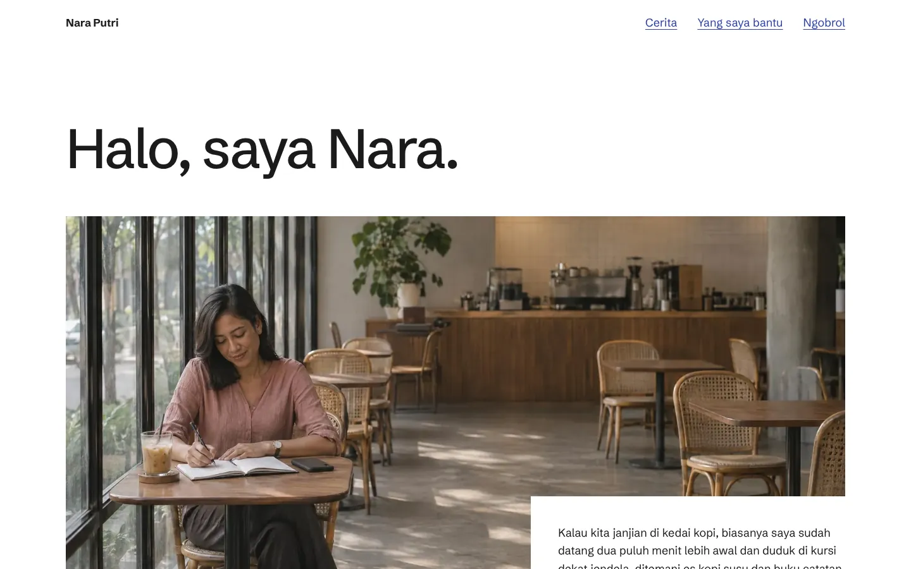
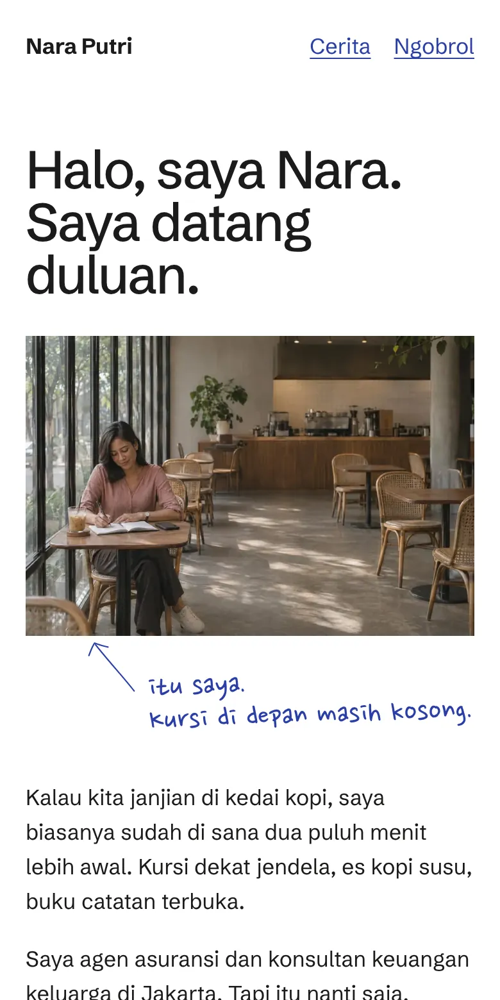

Essential
Meja dekat jendela
Rp2.500.000
Satu halaman yang mengalir seperti obrolan pertama. Pengunjung berkenalan dengan Nara, membaca cerita amplop ibunya, memahami apa yang ia kerjakan, lalu menjawab tiga pertanyaan yang biasa ia ajukan.
Yang dialami pengunjung
- Membaca alasan Nara memilih pekerjaannya lewat cerita amplop Ibu.
- Menjawab tiga pertanyaan dan membaca tanggapan Nara dalam tulisan tangannya.
- Melihat kebutuhan mana yang sebaiknya dibahas lebih dulu, lalu membawa jawabannya ke pesan pembuka.

